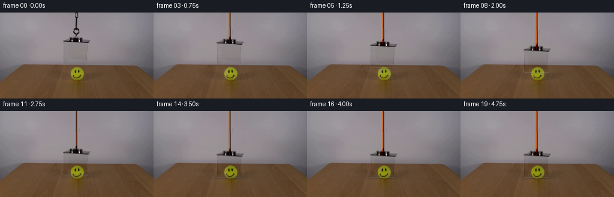
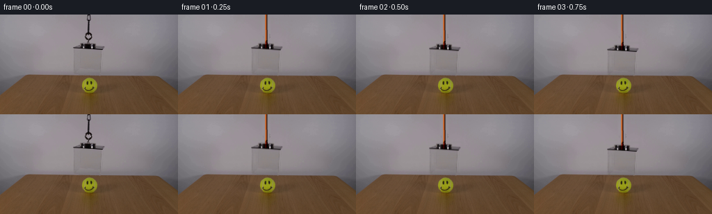

CODING AGENTS AS PIXEL WORLD MODELS
traex/DeepSeek-V4.1-Flash · 0098
点击播放 · 原生 RGB 像素
逐轮保存的候选
回放视频、检查图与代码变化。
每份候选均可单独播放。实际图片检查记录在下方工具轨迹中。
候选 01播放与检查图
点击播放 · 原生 RGB 像素


展开代码变化
--- 上一保存版本
+++ 本次保存版本
@@ -0,0 +1,186 @@
+from pathlib import Path
+
+import cv2
+import numpy as np
+from PIL import Image, ImageDraw
+
+import artifact_io
+
+
+W, H, N, FPS = 256, 144, 20, 4
+ROOT = Path(__file__).resolve().parent
+
+
+def smoothstep(value):
+ value = np.clip(value, 0.0, 1.0)
+ return value * value * (3.0 - 2.0 * value)
+
+
+def make_clean_background(source):
+ """Estimate the smooth wall behind the suspended box and cord."""
+ clean = source.astype(np.float32).copy()
+ rows = np.arange(H)
+ xs = np.arange(W, dtype=np.float32)
+
+ for y in range(88):
+ left = np.median(source[y, 82:100], axis=0)
+ right = np.median(source[y, 156:179], axis=0)
+ t = np.clip((xs - 100.0) / 56.0, 0.0, 1.0)[:, None]
+ clean[y] = left + t * (right - left)
+
+ removal = np.zeros((H, W), dtype=np.float32)
+ removal[0:41, 121:133] = 1.0
+ removal[39:88, 100:154] = 1.0
+ removal = cv2.GaussianBlur(removal, (0, 0), 1.15)
+ removal = np.clip(removal, 0.0, 1.0)[..., None]
+
+ original = source.astype(np.float32)
+ static = original * (1.0 - removal) + clean * removal
+ return np.clip(static, 0.0, 255.0)
+
+
+def make_acrylic_residual(source, clean):
+ """Store only the box's optical difference from the background."""
+ residual = np.zeros((H, W, 3), dtype=np.float32)
+ delta = source.astype(np.float32) - clean
+
+ body = np.zeros((H, W), dtype=np.uint8)
+ body[49:87, 104:150] = 1
+
+ top_detail = np.zeros((H, W), dtype=np.uint8)
+ detail_strength = np.linalg.norm(delta[38:50, 99:154], axis=2)
+ top_detail[38:50, 99:154] = (detail_strength > 4.2).astype(np.uint8)
+ top_detail = cv2.dilate(top_detail, np.ones((3, 3), np.uint8), iterations=1)
+
+ mask = np.maximum(body, top_detail).astype(bool)
+ residual[mask] = delta[mask]
+
+ # Keep the fine highlight structure but avoid translating broad sensor noise.
+ weak = np.linalg.norm(residual, axis=2) < 1.2
+ residual[weak] = 0.0
+ return residual
+
+
+def shift_layer(layer, dy):
+ matrix = np.float32([[1.0, 0.0, 0.0], [0.0, 1.0, dy]])
+ return cv2.warpAffine(
+ layer,
+ matrix,
+ (W, H),
+ flags=cv2.INTER_LINEAR,
+ borderMode=cv2.BORDER_CONSTANT,
+ borderValue=0,
+ )
+
+
+def draw_cord(base, end_y):
+ """Draw a narrow burnt-orange cord with a soft highlight."""
+ scale = 4
+ overlay = Image.new("RGBA", (W * scale, H * scale), (0, 0, 0, 0))
+ draw = ImageDraw.Draw(overlay)
+ top = -4
+ bottom = end_y + 3
+
+ draw.line(
+ [(126.8 * scale, top * scale), (127.1 * scale, bottom * scale)],
+ fill=(58, 25, 10, 255),
+ width=3 * scale,
+ )
+ draw.line(
+ [(126.1 * scale, top * scale), (126.35 * scale, bottom * scale)],
+ fill=(156, 62, 17, 255),
+ width=2 * scale,
+ )
+ draw.line(
+ [(125.75 * scale, top * scale), (126.0 * scale, bottom * scale)],
+ fill=(226, 118, 43, 235),
+ width=scale,
+ )
+ draw.line(
+ [(128.0 * scale, top * scale), (128.25 * scale, bottom * scale)],
+ fill=(42, 20, 10, 180),
+ width=scale,
+ )
+
+ small = overlay.resize((W, H), Image.Resampling.LANCZOS)
+ cord = np.asarray(small, dtype=np.float32)
+ alpha = cord[..., 3:4] / 255.0
+ return base * (1.0 - alpha) + cord[..., :3] * alpha
+
+
+def draw_bottom_rim(base, bottom_y, opacity):
+ scale = 4
+ overlay = Image.new("RGBA", (W * scale, H * scale), (0, 0, 0, 0))
+ draw = ImageDraw.Draw(overlay)
+ y = bottom_y * scale
+ draw.line(
+ [(104 * scale, y), (149 * scale, y)],
+ fill=(66, 69, 73, int(72 * opacity)),
+ width=2 * scale,
+ )
+ draw.line(
+ [(106 * scale, (bottom_y - 0.9) * scale), (147 * scale, (bottom_y - 0.9) * scale)],
+ fill=(207, 204, 198, int(46 * opacity)),
+ width=scale,
+ )
+ small = overlay.resize((W, H), Image.Resampling.LANCZOS)
+ rim = np.asarray(small, dtype=np.float32)
+ alpha = rim[..., 3:4] / 255.0
+ return base * (1.0 - alpha) + rim[..., :3] * alpha
+
+
+def add_contact_shadow(base, amount):
+ if amount <= 0.0:
+ return base
+ yy, xx = np.mgrid[0:H, 0:W]
+ shadow = np.exp(
+ -0.5 * (((xx - 126.5) / 25.0) ** 2 + ((yy - 112.0) / 2.4) ** 2)
+ )
+ shadow *= amount
+ result = base.copy()
+ result[87:] *= (1.0 - 0.10 * shadow[87:, :, None])
+ return result
+
+
+def generate():
+ source = np.asarray(Image.open(ROOT / "first_frame.png").convert("RGB"))
+ assert source.shape == (H, W, 3) and source.dtype == np.uint8
+
+ clean = make_clean_background(source)
+ residual = make_acrylic_residual(source, clean)
+ static = clean.copy()
+
+ frames = [source.copy()]
+ for index in range(1, N):
+ time_s = index / FPS
+ progress = smoothstep(time_s / 3.65)
+ dy = 25.5 * progress
+
+ frame = static.copy()
+ frame = draw_cord(frame, 45.0 + dy)
+ frame += shift_layer(residual, dy)
+
+ bottom_y = 86.4 + dy
+ rim_opacity = np.clip((dy - 1.0) / 7.0, 0.0, 1.0)
+ frame = draw_bottom_rim(frame, bottom_y, rim_opacity)
+
+ contact = np.clip((dy - 20.0) / 5.5, 0.0, 1.0)
+ frame = add_contact_shadow(frame, contact)
+
+ # A restrained acrylic reflection travels with the moving front face.
+ glow = np.zeros((H, W), dtype=np.float32)
+ top = int(round(57.0 + dy))
+ cv2.line(glow, (110, top), (110, top + 14), 1.0, 1, cv2.LINE_AA)
+ glow = cv2.GaussianBlur(glow, (0, 0), 1.0)
+ frame += glow[..., None] * np.array([11.0, 10.0, 10.0], dtype=np.float32)
+
+ frames.append(np.clip(frame, 0.0, 255.0).round().astype(np.uint8))
+
+ frames = np.stack(frames, axis=0)
+ assert np.array_equal(frames[0], source)
+ assert frames.shape == (N, H, W, 3) and frames.dtype == np.uint8
+ artifact_io.save(frames, ROOT)
+
+
+if __name__ == "__main__":
+ generate()
可观测工具轨迹
实际执行的命令与返回图片。
命令 1exit 0
/bin/bash -c "pwd && rg --files -g '"'!*.mp4'"' -g '"'!*.mov'"'"
命令 2exit 0
/bin/bash -c "sed -n '1,240p' prompt.txt"
命令 3exit 0
/bin/bash -c "sed -n '1,280p' GENERATION_RULES.md"
命令 4exit 0
/bin/bash -c 'ls -la && file first_frame.png && identify first_frame.png 2>/dev/null || true'
命令 5exit 0
/bin/bash -c "sed -n '1,260p' artifact_io.py"
命令 6exit 0
/bin/bash -c "sed -n '1,260p' player_template.html"
命令 7exit 0
/bin/bash -c "python - <<'PY'
from PIL import Image
import numpy as np
im=Image.open('first_frame.png').convert('RGB')
a=np.asarray(im)
print(im.size, a.dtype, a.shape)
print('corners', [a[y,x].tolist() for y,x in [(0,0),(0,255),(143,0),(143,255),(72,128)]])
# most common colors
u,c=np.unique(a.reshape(-1,3),axis=0,return_counts=True)
for i in np.argsort(c)[-25:][::-1]: print(c[i],u[i].tolist())
PY"命令 8exit 0
/bin/bash -c "python - <<'PY'
from PIL import Image
import numpy as np
from sklearn.cluster import KMeans
im=np.asarray(Image.open('first_frame.png').convert('RGB'))
# sample every 2px, 12 clusters
x=im[::2,::2].reshape(-1,3)
km=KMeans(n_clusters=16,random_state=0,n_init=10).fit(x)
centers=km.cluster_centers_.round().astype(int)
counts=np.bincount(km.labels_)
for i in np.argsort(counts)[::-1]:
print(f'{counts[i]:6d} {centers[i].tolist()}')
PY"命令 9exit 0
/bin/bash -c "python - <<'PY'
from PIL import Image
import numpy as np
im=np.asarray(Image.open('first_frame.png').convert('RGB'))
# region mean/quantiles per rows
for y in range(0,144,8):
a=im[y]
print(f'y={y:3d} mean={a.mean(0).astype(int)} min={a.min(0)} max={a.max(0)}')
PY"命令 10exit 0
/bin/bash -c "python - <<'PY'
from PIL import Image
import numpy as np
im=np.asarray(Image.open('first_frame.png').convert('RGB')).astype(float)
# categories
r,g,b=im.transpose(2,0,1)
# print category map every 2x2? classify yellow if g high vs b; brown if r>g*1.1 and table y; orange if r high g medium b low; dark; gray
for y in range(0,144,3):
s=''
for x in range(0,256,2):
R,G,B=im[y,x]
if G>70 and G>B*1.4 and R>G*0.8: c='Y'
elif R>G*1.25 and G>B*1.1 and R>85: c='W' # wood/orange
elif max(R,G,B)<65: c='#'
elif max(R,G,B)<95: c='d'
elif max(R,G,B)<125: c='o'
elif max(R,G,B)<150: c='.'
else: c=' '
s+=c
print(f'{y:3d} {s}')
PY"命令 11exit 0
/bin/bash -c "python - <<'PY' mods=['cv2','scipy','skimage','imageio','matplotlib'] for m in mods: try: x=__import__(m); print(m,'ok',getattr(x,'__version__','')) except Exception as e: print(m,'NO',e) PY"
命令 12exit 0
/bin/bash -c "python - <<'PY'
from PIL import Image
import numpy as np
im=np.asarray(Image.open('first_frame.png').convert('RGB'))
# save crops magnified for inspection with nearest/bicubic
for name,(x0,y0,x1,y1) in {'top':(80,0,180,90),'ball':(90,82,180,130),'full':(0,0,256,144)}.items():
a=Image.fromarray(im[y0:y1,x0:x1]).resize(((x1-x0)*4,(y1-y0)*4),Image.Resampling.NEAREST)
a.save('.tmp/'+name+'.png')
# bbox saturated neon and dark
mx=im.max(2); mn=im.min(2); sat=mx-mn
for label,m in [('neon',(im[:,:,1]>90)&(im[:,:,2]<80)&(im[:,:,0]>60)),('dark',mx<60),('orange',(im[:,:,0]>120)&(im[:,:,1]>50)&(im[:,:,1]<110)&(im[:,:,2]<60))]:
ys,xs=np.where(m)
print(label,len(xs), (xs.min(),ys.min(),xs.max(),ys.max()) if len(xs) else None)
# row/col extents top counts
print(' y hist',sorted(zip(*np.unique(ys,return_counts=True)), key=lambda z:-z[1])[:15])
PY"命令 13exit 0
/bin/bash -c "python - <<'PY'
from PIL import Image
import numpy as np
im=np.asarray(Image.open('first_frame.png').convert('RGB'))
# print pixel rows around object as RGB grouped into 4x4 mean grid with x labels
for y in range(0,120,4):
row=[]
for x in range(80,180,4):
p=im[y:y+4,x:x+4].mean((0,1)).astype(int)
row.append('%02x%02x%02x'%tuple(p))
print(f'{y:3d}', ' '.join(row))
PY"命令 14exit 0
/bin/bash -c "python - <<'PY'
import cv2, numpy as np
im=cv2.imread('first_frame.png')
g=cv2.cvtColor(im,cv2.COLOR_BGR2GRAY)
for lo,hi in [(15,40),(30,70),(50,100)]:
e=cv2.Canny(g,lo,hi)
lines=cv2.HoughLinesP(e,1,np.pi/180,threshold=15,minLineLength=12,maxLineGap=3)
print('Canny',lo,hi,'pixels',e.sum()//255,'lines',0 if lines is None else len(lines))
if lines is not None:
arr=[]
for l in lines[:,0]:
x1,y1,x2,y2=map(int,l); length=((x2-x1)**2+(y2-y1)**2)**.5
angle=np.degrees(np.arctan2(y2-y1,x2-x1))
if y1<125 and y2<125:
arr.append((round(length,1),round(angle,1),(x1,y1,x2,y2)))
for row in sorted(arr,reverse=True)[:30]: print(row)
PY"命令 15exit 0
/bin/bash -c "python - <<'PY'
from PIL import Image
import numpy as np
im=np.asarray(Image.open('first_frame.png').convert('RGB')).astype(float)
# fit background as polynomial in x,y using known left x0:30 and right x230:255 rows 0:87
ys,xs=np.mgrid[0:87,0:256]
mask=(xs<25)|(xs>230)
# polynomial [1,x,y,x2,y2,xy,x3,y3,x2y,xy2]
X=np.stack([np.ones_like(xs),xs,ys,xs*xs,ys*ys,xs*ys,xs**3,ys**3,xs*xs*ys,xs*ys*ys],-1).astype(float)
coef=np.linalg.lstsq(X[mask],im[:87][mask],rcond=None)[0]
pred=X@coef
res=im[:87]-pred
mag=np.abs(res).mean(2)
# row residual summary and segments where >5
for y in range(0,87,3):
m=mag[y]>5
# contiguous runs len>=2
runs=[]; s=None
for x,v in enumerate(m):
if v and s is None:s=x
if (not v or x==255) and s is not None:
e=x if not v else 256
if e-s>=2:runs.append((s,e-1,round(float(mag[y,s:e].mean()),1)))
s=None
print(f'{y:2d} mean {mag[y].mean():4.1f} runs {runs}')
PY"命令 16exit 0
/bin/bash -c "python - <<'PY'
from PIL import Image
import numpy as np
im=np.asarray(Image.open('first_frame.png').convert('RGB')).astype(float)
# Print edge strength rows and column profile in object region based vertical gradient
v=np.abs(np.diff(im,axis=0)).mean(2)
h=np.abs(np.diff(im,axis=1)).mean(2)
print('vertical edges at each y, x positions with v>12 in 80:180')
for y in range(0,120):
xs=np.where(v[y,80:180]>10)[0]+80
if len(xs): print(f'{y:3d}', xs.tolist())
print('horizontal edges x and y ranges')
for x in range(80,180):
ys=np.where(h[:120,x]>12)[0]
if len(ys)>1: print(f'{x:3d}', ys.tolist())
PY"命令 17exit 0
/bin/bash -c "python - <<'PY'
from PIL import Image
import numpy as np
im=np.asarray(Image.open('first_frame.png').convert('RGB'))
# specific columns values rows 0-120
for x in [90,100,104,105,106,107,110,120,125,126,127,128,129,130,135,140,145,146,147,150,155,160,170,180]:
print('\\nx',x)
for y in range(0,120,4):
p=im[y:y+4,x].mean(0).astype(int)
print(f'{y:3d}:{p[0]:3d},{p[1]:3d},{p[2]:3d}',end=' ')
print()
PY"命令 18exit 0
/bin/bash -c "python - <<'PY'
from PIL import Image
import numpy as np
im=np.asarray(Image.open('first_frame.png').convert('RGB'))
for y in range(0,90,2):
vals=[]
for x in range(118,139):
r,g,b=map(int,im[y,x]);
if max(r,g,b)-min(r,g,b)>12 or max(r,g,b)<90:
vals.append((x,(r,g,b)))
print(f'{y:2d}',vals)
PY"命令 19exit 0
/bin/bash -c "python - <<'PY'
from PIL import Image
import numpy as np
im=np.asarray(Image.open('first_frame.png').convert('RGB'))
for y in [0,5,10,15,20,25,30,35,40,45,50,55,60,65,70,75,80,85]:
print(y, ' '.join('%3d'%im[y,x,0] for x in range(100,155)))
PY"命令 20exit 0
/bin/bash -c "python - <<'PY'
from PIL import Image
import numpy as np
im=np.asarray(Image.open('first_frame.png').convert('RGB')).astype(float)
# candidates: string x=126.4; detect vertical edges around 122-133 and count >20 changes in y 0:90
for x in range(120,137):
d=np.abs(np.diff(im[:90,x],axis=0)).mean(1)
print(x, round(float(np.percentile(d,90)),1), int((d>20).sum()), round(float(d.mean()),1))
# detect face front top y=40..50. horizontal edge threshold 15 between x 100:155
for y in range(36,55):
d=np.abs(np.diff(im[y,95:160],axis=0)).mean(1)
print('y',y,'mean',round(float(d.mean()),1),'max',round(float(d.max()),1),'n>20',int((d>20).sum()))
PY"命令 21exit 0
/bin/bash -c "python - <<'PY'
from PIL import Image
import numpy as np
im=np.asarray(Image.open('first_frame.png').convert('RGB')).astype(float)
# line intensity along x for rows and y for columns, show local minima candidates
for y in [41,42,43,44,45,46,47,48,49,50]:
a=im[y,:,0]
d=np.abs(np.diff(a))
inds=np.where(d>20)[0]
print('row',y,[(int(x),round(float(d[x]),1),int(a[x]),int(a[x+1])) for x in inds])
PY"命令 22exit 0
/bin/bash -c "python - <<'PY'
from PIL import Image
import numpy as np
im=np.asarray(Image.open('first_frame.png').convert('RGB'))
# ASCII luminance of top region 95:165 x, y0:90, downsample x by 1 y by 1 but chars
chars='@%#*+=-:. '
for y in range(0,90):
s=''
for x in range(95,166):
v=im[y,x].mean()
idx=int(np.clip(v/165*len(chars),0,len(chars)-1))
s+=chars[idx]
print(f'{y:02d} {s}')
PY"命令 23exit 0
/bin/bash -c "python - <<'PY'
from PIL import Image
import numpy as np
im=np.asarray(Image.open('first_frame.png').convert('RGB')).astype(float)
# derive background via row medians outside central. table via row medians x<70,x>195. report means per row
bg=np.median(np.concatenate([im[:,0:35],im[:,225:256]],axis=1),axis=1)
tab=np.median(np.concatenate([im[:,0:45],im[:,210:256]],axis=1),axis=1)
for y in range(0,144,4): print(f'{y:3d} bg {bg[y].round().astype(int)} table {tab[y].round().astype(int)}')
PY"命令 24exit 0
/bin/bash -c "python - <<'PY'
from PIL import Image
import numpy as np
im=np.asarray(Image.open('first_frame.png').convert('RGB'))
# ball crop values at actual pixels grid every 2, classify colors
for y in range(88,120,2):
s=''
for x in range(108,152,2):
p=im[y:y+2,x:x+2].mean((0,1))
r,g,b=p
if g>100 and g>b*1.6 and r>80: c='Y'
elif r>80 and g>55 and b<70: c='w'
elif r>105 and g>95 and b<90: c='y'
else:c='.'
s+=c
print(f'{y:3d} {s}')
# face region luminance/color masks with positions
for y in range(90,118,2):
vals=[]
for x in range(110,150):
r,g,b=im[y,x]
if r>70 and g>55 and b<60 and r>g*1.2:
vals.append((x,'w'))
elif g>80 and b<60 and r>60:
vals.append((x,'Y'))
print(y, vals)
PY"命令 25exit 1
/bin/bash -c 'python generate.py'
命令 26exit 0
/bin/bash -c 'python generate.py'
命令 27exit 0
/bin/bash -c "python - <<'PY'
from PIL import Image
import numpy as np
frames=np.stack([np.asarray(Image.open(f'frames/{i:02d}.png').convert('RGB')) for i in range(20)]).astype(float)
src=np.asarray(Image.open('first_frame.png').convert('RGB'))
print('frame0 exact',np.array_equal(frames[0].astype(np.uint8),src))
for i in range(20):
f=frames[i]
d=np.abs(f-src).mean()
print(f'{i:02d} t={i/4:.2f} meanabs={d:.2f} center={f[70:120,100:155].mean((0,1)).round().astype(int)}')
# gradients near moving box boundaries in final
f=frames[-1]
print('final row means y 35-120')
for y in range(35,121,3): print(y, f[y].mean(0).round().astype(int), 'center', f[y,100:155].mean(0).round().astype(int))
# diff across boundaries
for x in [101,102,103,104,105,106,107,147,148,149,150,151,152]:
print('x',x,'top',f[40:88,x].mean(0).round().astype(int),'bottom',f[88:120,x].mean(0).round().astype(int))
PY"命令 28exit 0
/bin/bash -c "python - <<'PY'
import generate, numpy as np
from PIL import Image
src=np.asarray(Image.open('first_frame.png').convert('RGB'))
clean=generate.make_clean_background(src)
res=generate.make_acrylic_residual(src,clean)
for y in range(35,90,2):
m=np.linalg.norm(res[y],axis=1)
xs=np.where(m>3)[0]
# runs
runs=[];s=None
for x in range(256):
v=m[x]>3
if v and s is None:s=x
if (not v or x==255) and s is not None:
e=x if not v else 256
if e-s>=1:runs.append((s,e-1,round(float(m[s:e].mean()),1),round(float(m[s:e].max()),1)))
s=None
print(y,runs)
PY"命令 29exit 0
/bin/bash -c "python - <<'PY'
from PIL import Image
import numpy as np
im=np.asarray(Image.open('first_frame.png').convert('RGB')).astype(float)
for y in [48,49,50,51,52,53,54,55,56,57,58,59,60,61,62,63,64,65,66,67,68,69,70,75,80,84,85,86,87,88]:
vals=[]
for x in [100,102,103,104,105,106,107,108,109,110,111,112,113,114,115,140,141,142,143,144,145,146,147,148,149,150,151,152,153,154,155]:
vals.append('%d:%d'%(x,round(im[y,x,0])))
print(y,' '.join(vals))
PY"命令 30exit 0
/bin/bash -c "python - <<'PY'
from PIL import Image
import numpy as np
im=np.asarray(Image.open('first_frame.png').convert('RGB'))
# print crop in base64 no, calculate stats around vertical edges
for x in range(100,156):
d=np.abs(np.diff(im[49:88,x],axis=0)).mean()
print(x, round(float(d),2), end=' | ')
if (x-99)%7==0:print()
PY"命令 31exit 0
/bin/bash -c "python - <<'PY'
from PIL import Image
import numpy as np
im=np.asarray(Image.open('first_frame.png').convert('RGB')).astype(float)
for x in [104,105,106,107,108,109,110,111,112,113,114,115,116,117,118,119,120,121,122,123,124,125,126,127,128,129,130,131,132,133,134,135,136,137,138,139,140,141,142,143,144,145,146,147,148,149,150,151,152,153,154,155,156,157,158,159,160]:
print(x, ' '.join('%3d'%im[y,x,0] for y in range(44,53)), '..', ' '.join('%3d'%im[y,x,0] for y in range(82,91)))
PY"命令 32exit 0
/bin/bash -c "python - <<'PY'
import generate,numpy as np
from PIL import Image
src=np.asarray(Image.open('first_frame.png').convert('RGB')).astype(float)
clean=generate.make_clean_background(src)
for y in [42,43,44,45,46,47,48,49,50,52,55,60,65,70,75,80,85,86,87]:
print('\\ny',y)
print('x src clean diff')
for x in [100,102,104,105,106,107,108,109,110,112,114,116,118,120,122,124,126,128,130,132,134,136,138,140,142,144,145,146,147,148,149,150,152,154]:
print(f'{x:3d} {src[y,x].astype(int)} {clean[y,x].round().astype(int)} {(src[y,x]-clean[y,x]).round().astype(int)}')
PY"命令 33exit 0
/bin/bash -c "python - <<'PY'
from PIL import Image
import numpy as np
src=np.asarray(Image.open('first_frame.png').convert('RGB')).astype(float)
fin=np.asarray(Image.open('frames/19.png').convert('RGB')).astype(float)
# render ASCII crops side by side luminance, 80:175, 20:130
chars='@%#*+=-:. '
def ascii_crop(a,x0,x1,y0,y1,sx=2,sy=2):
out=[]
for y in range(y0,y1,sy):
s=''
for x in range(x0,x1,sx):
v=a[y:y+sy,x:x+sx].mean()
s+=chars[int(np.clip(v/165*len(chars),0,len(chars)-1))]
out.append(s)
return out
A=ascii_crop(src,80,175,20,130)
B=ascii_crop(fin,80,175,20,130)
print('SRC'.ljust(48),'FINAL')
for a,b in zip(A,B):print(a,' ',b)
PY"命令 34exit 0
/bin/bash -c "python - <<'PY'
from PIL import Image
import numpy as np
im=np.asarray(Image.open('first_frame.png').convert('RGB')).astype(float)
# color and differences around row 40-50 in object region, derive edge to body transition
for y in range(39,51):
print('y',y)
for x in range(100,158):
r,g,b=im[y,x]
# compact code grayscale
print('%3d'%round((r+g+b)/3),end='')
if x%32==31: print()
print()
PY"命令 35exit 0
/bin/bash -c "python - <<'PY'
from PIL import Image
import numpy as np
src=np.asarray(Image.open('first_frame.png').convert('RGB')).astype(float)
fin=np.asarray(Image.open('frames/19.png').convert('RGB')).astype(float)
# bounding of moving front face in final: source face [106:145,49:86] shifted 25.5 => y74.5:111.5
for y in range(68,116,2):
print('\\ny',y)
for x in [102,104,105,106,107,108,110,112,114,116,118,120,124,128,132,136,140,142,144,145,146,147,148,150,152,154]:
print(f'{x}:{fin[y,x].round().astype(int).tolist()}',end=' ')
print()
PY"命令 36exit 0
/bin/bash -c "ls -lah | sed -n '1,80p' && du -sh frames pixels.npz index.html inspection.png transition_check.png"
命令 37exit 0
/bin/bash -c 'which ffmpeg || true'
命令 38exit 0
/bin/bash -c "python - <<'PY'
from pathlib import Path
import numpy as np
from PIL import Image
frames=np.stack([np.asarray(Image.open(p).convert('RGB')) for p in sorted(Path('frames').glob('*.png'))])
src=np.asarray(Image.open('first_frame.png').convert('RGB'))
print('frames',frames.shape,frames.dtype)
print('frame0_exact',np.array_equal(frames[0],src))
print('frame0_hash',__import__('hashlib').sha256(frames[0].tobytes()).hexdigest())
print('frame19_hash',__import__('hashlib').sha256(frames[19].tobytes()).hexdigest())
print('frame_ranges',[(int(f.min()),int(f.max())) for f in frames[::5]])
print('consecutive_mean_abs',[round(float(np.abs(frames[i].astype(float)-frames[i-1]).mean()),3) for i in range(1,20)])
PY"命令 39exit 0
/bin/bash -c "python -m py_compile generate.py && python - <<'PY'
import numpy as np
z=np.load('pixels.npz')['pixels']
print('packed',z.shape,z.dtype,'range',int(z.min()),int(z.max()))
PY"保存候选 1 份；完成命令 39 次；可验证图片返回 0 张。原始 API 响应与完整日志保留在本地。